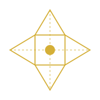

The universe is not a terminal accident of heat death. It is a gestating system winding up toward higher coherence. We adopt the Faith Prior: the algorithmic expectation that simplicity is likely and meaning is fundamental.